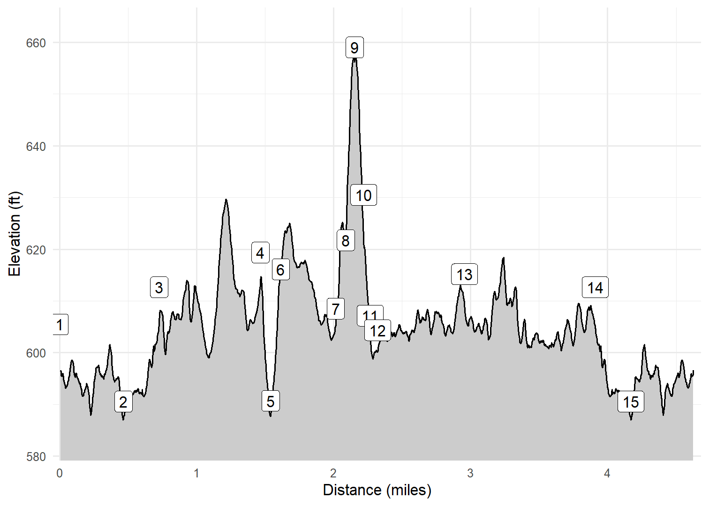

Whitefish Dunes State Park
XXX
On April 16, 2023, Kim, Cash and I hiked within Whitefish Dunes State Park. We actually started in Cave Point County Park before heading south to catch the Brachiopod Trail in the state park. We followed that to the Nature Center Office to catch the start of the Red Trail. We hopped off the Red Trail several times to “spur” over to the beach and Whitefish Bay, before hopping on the boardwalk to see the “Old Baldy” dune. From there we looped inland on the Yellow and Green trails to the Nature Center before retracing our steps to the county park. A really nice and scenic trail.
Walk-Specific Map
Elevation Profile

Images

DCWFCP01: Cave Point

DCWFCP01: Cash at Cave Point

DCWFCP01: Kim and Cash on the trail

DCWFRED01: Typical scenery Spring 2023

DCWFRED02: Beach

DCWFRED02: Boardwalk to the beach

DCWFCP01: Cave Point

DCWFCP01: Cave Point

DCWFCP01: Cash and I at Cave Point
GPX Download
A sanitized GPX file of our hike is here.
Summary Information
| NUM | trackID | Primary | Description | Distance | CumDist | DeltaElev |
|---|---|---|---|---|---|---|
| 1 | DCWFCP01 | Cave Point Access Tr | Cave Point County Park parking area to Brachiopod Tr | 0.47 | 0.47 | -15 |
| 2 | DCWFBRPD01 | Brachiopod Tr | Cave Point Access Tr to Red Tr | 0.26 | 0.73 | 22 |
| 3 | DCWFRED01 | Red Tr | Brachiopod Tr to Beach access spur | 0.74 | 1.47 | 7 |
| 4 | DCWFRED02 | Spur to beach | Red Tr to beach | 0.07 | 1.54 | -29 |
| 5 | DCWFRED02 | Spur to beach | beach to Red Tr | 0.07 | 1.61 | 29 |
| 6 | DCWFRED03 | Red Tr | Beach access spur to Old Baldy Tr | 0.40 | 2.02 | -8 |
| 7 | DCWFOBLD01 | Old Baldy Tr | Red Tr to Old Baldy Spur | 0.07 | 2.09 | 13 |
| 8 | DCWFOBLD02 | Old Baldy Spur | Old Baldy Tr to Old Baldy overlook | 0.06 | 2.15 | 37 |
| 9 | DCWFOBLD02 | Old Baldy Spur | Old Baldy overlook to Old Baldy Tr | 0.06 | 2.22 | -37 |
| 10 | DCWFOBLD03 | Old Baldy Tr | Old Baldy Spur to Yellow Tr | 0.05 | 2.27 | -23 |
| 11 | DCWFYLW10 | Yellow Tr | Old Baldy Tr to Yellow Spur Tr | 0.05 | 2.32 | -3 |
| 12 | DCWFYLWS01 | Yellow Spur Tr | Yellow Tr to Yellow Tr | 0.63 | 2.96 | 11 |
| 13 | DCWFYLW20 | Yellow Tr | Yellow Spur Tr to Red Tr | 0.95 | 3.91 | -4 |
| 14 | DCWFBRPD01 | Brachiopod Tr | Red Tr to Cave Point Access Tr | 0.26 | 4.17 | -22 |
| 15 | DCWFCP01 | Cave Point Access Tr | Brachiopod Tr to Cave Point County Park parking area | 0.47 | 4.64 | 15 |